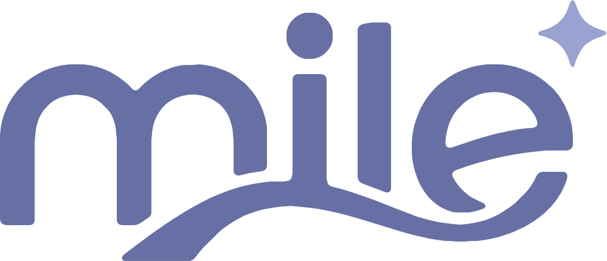
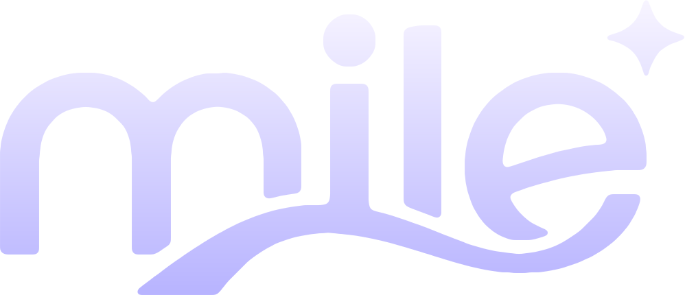

01 / DAILY LIFE
무엇부터 준비해야 할지 막막한 시작
생활에 필요한 물품은 다양하지만, 처음부터 모든 것을 알고 준비하기는 어렵습니다. 빠뜨린 물품을 다시 구매하는 과정에서 시간과 비용이 더해집니다.

기존 웹사이트 ↗
기숙사 생활과 자취, 새로운 독립을 시작할 때 생활에 필요한 물품을 하나씩 알아보고 준비하는 과정은 생각보다 복잡합니다.
생활에 필요한 물품은 다양하지만, 처음부터 모든 것을 알고 준비하기는 어렵습니다. 빠뜨린 물품을 다시 구매하는 과정에서 시간과 비용이 더해집니다.
세탁과 청소 같은 일상적인 생활 관리부터 자립에 필요한 정보까지, 필요한 내용을 찾아 정리하는 데에도 노력이 필요합니다.
MILE은 생활용품을 준비하는 과정과 실제 생활에 필요한 정보를 연결해 자립의 시작을 돕는 서비스를 기획합니다.
새로운 생활을 시작할 때 필요한 기본 생활용품을 한데 모아, 준비 과정의 번거로움을 줄이는 생활용품 키트입니다.
생활용품 구성미니북과 QR 안내 카드를 통해 물품 사용법과 기본적인 생활 관리 정보를 쉽게 확인할 수 있도록 구성합니다.
미니북 · QR 카드자립과 생활에 필요한 정책 및 실용 정보를 탐색할 수 있도록 돕는 정보 플랫폼입니다.
정보 페이지 살펴보기 ↗첫걸음 키트는 새로운 생활을 준비하는 사람이 기본적인 생활용품을 보다 편리하게 마련하도록 기획한 핵심 구성입니다.
세탁과 청소, 위생 관리 등 일상에서 반복적으로 사용하는 생활용품을 중심으로 구성합니다.
계량과 사용 방법을 안내하는 자료를 연계해 물품을 구매하는 데서 그치지 않고 실제 생활에 활용하도록 돕습니다.
기숙사 생활과 대학생의 자취 등 사용 환경에 따른 필요를 고려해 키트 구성을 발전시킵니다.
생활 환경과 필요한 준비가 다른 사람들을 고려해 서비스의 적용 범위를 단계적으로 넓혀갑니다.
제한된 공간에서 생활에 필요한 물품을 효율적으로 준비할 수 있도록 돕습니다.
처음 마련하는 생활용품과 일상 관리 정보를 함께 제공해 독립 생활의 부담을 줄입니다.
생활의 기본을 마련하고 필요한 정보를 찾는 과정에서 실질적인 도움을 제공하는 방향으로 발전합니다.
MILE은 생활용품과 정보의 연결을 통해 새로운 시작의 부담을 덜고, 누구나 자신의 일상을 차근차근 만들어 갈 수 있는 환경을 지향합니다.
필요한 물품과 정보를 한곳에서 확인할 수 있는 편리한 경험을 만듭니다.
일상에서 바로 활용할 수 있는 구성과 안내를 중심으로 서비스를 설계합니다.
작은 준비가 독립적인 생활을 이어 가는 기반이 될 수 있도록 고민합니다.
새로운 생활의 시작에 MILE이 함께합니다.
기존 MILE 웹사이트 ↗ Small Steps, Brighter Life.